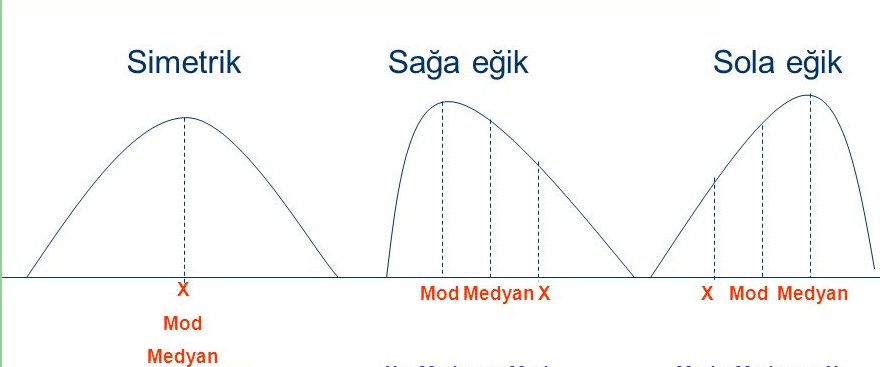
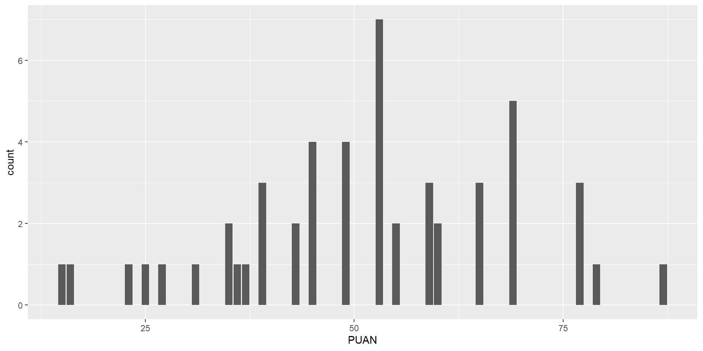
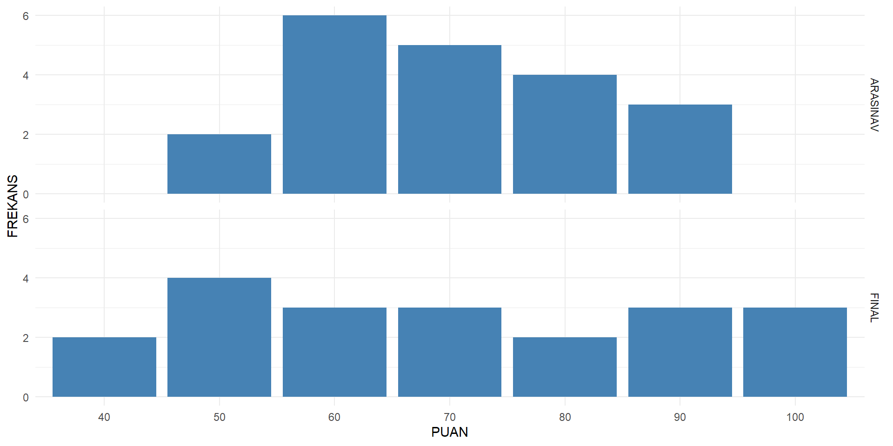
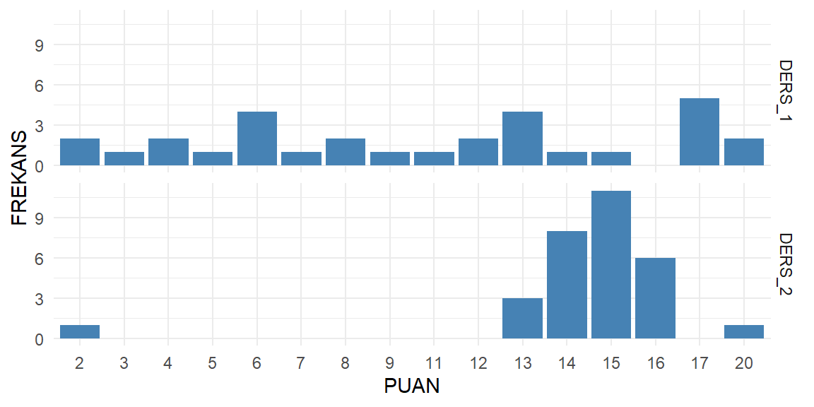
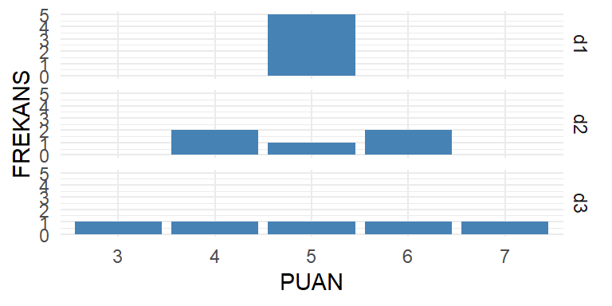
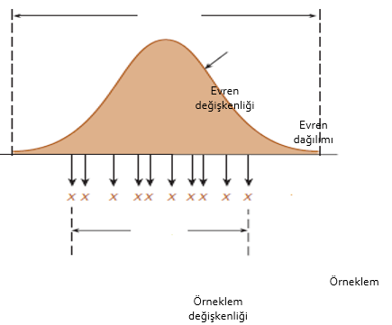
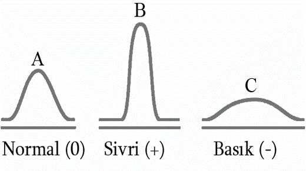
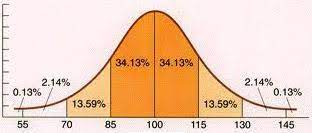

Test İstatistikleri
Doç. Dr. Kübra ATALAY KABASAKAL
📌 İçerik
- Frekans Tablosu Oluşturma
- Merkezi Eğitim Ölçüleri
- Mod
- Medyan
- Aritmetik Ortalama
- Merkezi Dağılım Ölçüleri
- Ranj
- Çeyrek Sapma
- Standart Sapma/Varyans
- Ranj
📊 Frekans Tablosu Oluşturma
50 Öğrencinin 100 Üzerinden Aldığı Puanlar
- Testin uygulanması sonucu öğrencilerden elde edilen puanlar, üzerlerinde hiç bir düzenleme yapılmadan, bazı işlemler uygulanmadan bir puan yığını olmanın dışında bize hiç bir bilgi sunmaz.
📊 Frekans Tablosu Oluşturma
50 Öğrencinin 100 Üzerinden Aldığı Puanlar
- Tabloda öğrencilerin sınavdan aldıkları puanlar karışık bir şekilde verilmiştir. Bu tabloya bakarak öğrencilere ilişkin bilgide bulunmak, sınıfın başarı düzeyi vb. hakkında yorum yapmak oldukça zordur!!!
✅ Frekans Tablosu Oluşturma
Öğrenci puanları en düşük puandan en yüksek puana doğru düzenlenebilir.
Hatta puanların sıraya dizilmesiyle birlikte her puanın kaç öğrenci tarafından alındığını gösteren frekans sütunu da oluşturulabilir.
Ayrıca her bir puanın sahip olduğu frekans ile önceki frekansların toplanmasıyla tf ile gösterilen “toplam frekans” (yığılmalı frekans)” sütunu da oluşturulabilir.
✅Frekans Tablosu Oluşturma
✅ Frekans Tablosu Oluşturma
Toplam frekans, her bir puandan önce kaç tane puan olduğunu ve her bir puanın kaçıncı puan olduğunu da görebilmemizi sağlayan bir değerdir.
Örneğin; 23 puanı 3. sırada yer alır ve 23’ten önce iki puan bulunmaktadır;
11., 12., 13. ve 14. puanlar 39’tur ve 39’dan önce 10 puan daha bulunmaktadır vb.
📝 MERKEZİ EĞİLİM (YIĞILMA) ÖLÇÜLERİ
- Mod (tepe değer)
- Medyan (ortanca)
- Aritmetik ortalama

##📝 Mod (tepe değer) {.smaller}
- Puanlar içinde en çok tekrarlanan puandır. Frekansı en yüksek puandır.

📝 Medyan (ortanca)
Sıralanmış verilerin tam ortasında yer alan puandır.
Medyanın hesaplanması için öncelikle 50 puanın tam ortasında yer alan puanın kaçıncı puan olduğu belirlenmelidir: 50 puanı tam iki yarıya ayıran puanlar 25. ve 26. puanlarıdır. Toplamalı frekans sütununa bakıldığında bu puanların işaretlenmiş grupta bulundukları görülmektedir.
📝 Aritmetik ortalama
- Puanların toplamının puan sayısına (öğrenci sayısına) bölünmesiyle elde edilen değerdir. Kısaca “ortalama” olarak da bilinir.
📝 Aritmetik ortalama
📝 Aritmetik ortalama
- ARASINAV puanları
\(\frac{50 + 50 + 60 + 60 + 60 + 60 + 60 + 60 + 70 + 70 + 70 + 70 + 70 + 80 + 80 + 80 + 80 + 90 + 90 + 90}{20} = 70\)
- FINAL puanları
\(\frac{40 + 40 + 50 + 50 + 50 + 50 + 60 + 60 + 60 + 70 + 70 + 70 + 80 + 80 + 90 + 90 + 90 + 100 100 + 100}{20} = 70\)

📝 Aritmetik ortalama
- Ara Sınav Frekans Tablosu
| Puan | Frekans |
|---|---|
| 50 | 2 |
| 60 | 6 |
| 70 | 5 |
| 80 | 4 |
| 90 | 3 |
\(\frac{50*2 + 60*6 + 70*5 + 80*4 + 90*3}{20} = 70\)
- Final Frekans Tablosu
| Puan | Frekans |
|---|---|
| 40 | 2 |
| 50 | 4 |
| 60 | 3 |
| 70 | 3 |
| 80 | 2 |
| 90 | 3 |
| 100 | 3 |
\(\frac{40*2 + 50*4 + 60*3 + 70*3 + 80*2 + 90*3 + 100*3}{20} = 70\)
📚 Aritmetik ortalama
| İstatistik | ARASINAV | FINAL |
|---|---|---|
| Minumum | 50 | 40 |
| 1.çeyrek | 60 | 50 |
| Ortanca | 70 | 70 |
| Ortalama | 70 | 70 |
| 3.çeyrek | 80 | 90 |
| Maksimum | 90 | 100 |
📚 Dağılım Ölçüleri
Ranj
Çeyrek Sapma
Standart Sapma/Varyans
📚 Dağılım Ölçüleri
İngilizce dersinde bir grup öğrenciye uygulanan arasınavdan alttaki grafik ise aynı gruba uygulanan finalden alınan puanları göstermektedir.
her iki sınavdan alınan puanların aritmetik ortalaması eşit olup 70´dir.

📚 Dağılım Ölçüleri
İki sınavdan alınan puanların ortalaması birbirine eşit olmasına rağmen puanların dağılımı birbirinden oldukça farklıdır.
Öğrencilerin puanları arasındaki fark finalde arasınava göre daha fazladır.

📚 Ranj (Dizi Genişliği)
- Puanların hangi aralıkta değiştiğini gösteren en basit merkezi dağılım ölçüsüdür. Bir başka deyişle, en yüksek puan ile en düşük puan arasındaki farktır.
| Puan | Frekans | tf | Oran |
|---|---|---|---|
| 39 | 3 | 3 | 0.14 |
| 43 | 2 | 5 | 0.09 |
| 45 | 4 | 9 | 0.18 |
| 49 | 4 | 13 | 0.18 |
| 53 | 7 | 20 | 0.32 |
| 55 | 2 | 22 | 0.09 |
📚 Ranj (Dizi Genişliği)
📚 Ranj (Dizi Genişliği)
Ranj tamamen iki uç değer kullanılarak ve dağılımdaki diğer puanlar göz ardı edilerek hesaplanan bir değişim ölçüsü olduğundan yeterince hassas ve kullanışlı değildir.
Bir dağılımdaki uç değerlerin diğer puanlardan kopuk olması, puanların yayılımı hakkında yanıltıcı bilgi verir.
iki grafikteki puan dağılımlarının ranjı 20-2=18 olup puanların 18 puanlık bir aralıkta dağıldığını ifade eder. Ancak birinci grubun daha heterojen, ikinci grubunsa daha homojen bir dağılım gösterdiği gözlenmektedir
Ranj, gruptaki puanların birbirine ne kadar yakın veya uzak olduğu ile ilgili bir bilgi vermemektedir.
📚 Standart sapma / Varyans
En çok tercih edilen ve en yaygın kullanılan merkezi dağılım ölçüsüdür.
Puanların aritmetik ortalamadan farklılıklarının (uzaklıklarının) standart değerini verir.
Puanların farklılığı arttıkça standart sapma değeri artar, puanların farklılığı azaldıkça (benzerliği arttıkça) standart sapma değeri azalır.
📚 Standart sapma
Standart sapma dağılımın ortalamasını referans noktası olarak kullanır ve her bir puan ve ortalama arasındaki uzaklığı ele alarak değişkenliği ölçer.
Böylece puanların genel olarak ortalamaya ne kadar yakın veya ortalamadan ne kadar uzak olup olmadığını belirler. Diğer bir ifadeyle puanların bir arada toplanıp toplanmadığını veya yayılıp yayılmadığını belirtir.
Özetle standart sapma ortalamadan ortalama uzaklığı tahmin eder.
Standart sapma / Varyans
📚 Standart sapma / Varyans
Standart sapma, sapma puanı kavramına dayanır.
Bir grupta X ham puanına sahip her bir birey için sapma puanı, x, aşağıdaki şekilde tanımlanabilir:
Böylece bir sapma puanı, her bir bireyin puanı ve grup ortalaması arasındaki uzaklıktır.
📚 Standart sapma / Varyans
| \(x_{i}\) | \(x_{i}\) | \(x_{i}^2\) |
|---|---|---|
| 8 | 8-3 =5 | 25 |
| 1 | 1-3=-2 | 4 |
| 3 | 3-3=0 | 0 |
| 0 | 0-3=-3 | 9 |
| = 5 - 2 +0 -3 =0 | =25 + 4 +0 +9 = 38 / 4 |
Ortalama dağılımın denge noktası olduğundan, ortalamanın üstündeki uzaklıkların toplamı, ortalamanın altındaki uzaklıkların toplamına eşittir. Bu nedenle sapma puanların toplamı HER ZAMAN sıfıra eşittir.
📚 Standart sapma / Varyans
Sapma puanların karesinin alınması işlemi, sadece artı ve eksi işaretlerden kurtulmaya yol açmaz, aynı zamanda kare uzaklıklara dayanan değişim ölçüsünün elde edilmesine neden olur.
Ancak varyans bazı sonuç çıkarmaya dayalı istatistiksel yöntemlerde kullanışlı olsa da, kare uzaklık kavramı anlaşılması kolay bir betimleyici ölçü değildir.
Varyansın kare kökünün alınmasıyla elde edilen standart sapma kavramsal olarak ortalamadan olan ortalama uzaklığın ölçüsünü sağlar ve ile gösterilir.
📚 Standart sapma / Varyans
| \[\sigma^2 = \frac{\sum(X_i -\mu)}{N}\] | \[S^2 = \frac{\sum(X_i -\overline{X})}{N-1}\] |
- Örneklemler evrenlerinden daha az değişkenlik gösterme eğilimindedir. Bir örneklemin evrenine göre daha az değişken olması eğilimi örneklem değişkenliğinin evren değişkenliğinin yanlı kestirimini vermesi anlamına gelmektedir. Bu yanlılık evren değerinin daha düşük kestirilmesi yönündedir.
📚 Standart sapma / Varyans
- Yetişkinlerin boy uzunlukları evreni normal bir dağılım gösterir. Bu evrenden bir örneklem seçilirse, uzunlukları ortalamaya yakın bireylerin örneklemde yer alma şansı daha yüksektir. Sonuç olarak örneklemdeki puanlar evrendeki puanlardan daha az yayılım göstereceklerdir.
📚 Standart sapma / Varyans
💬 Beni Dinlediğiniz İçin Teşekkürler! 🙏
📧
- Doç. Dr. Kübra Atalay Kabasakal: katalay@hacettepe.edu.tr
✨ 🙌 🎉
Normal Dağılım
Eğitimde ve psikolojideki değişkenlerin çoğu, evrende normal dağılıma sahip oldugu varsayilir.
Normal dağılım eğrisi simetrik bir eğridir.
- Mod, medyan ve aritmetik ortalama birbirine eşit ve dağılımın tam orta noktasındadır.
- Ölçme sonuçlarının büyük bir kısmı orta kısımda yani merkezi eğilim ölçüsünün etrafında toplanır.
- Orta kısımdan sağa ve sola gidildikçe, yığılmalar önce yavaş yavaş sonra hızlı bir şekilde düşerek iki uçta kuyruk oluşturur.
Normal Dağılım
Normal dağılım istatistikteki en önemli dağılımdır. Bir cok fiziksel, psikoloji, psikomotor karekterlerin ölçümleri normal dağılım gösterir. Örnek: Çocukların reaksiyon hızları, boy
Normal dağılım göstermeyen ölçümler: Yas, kişilerin eğitim düzeyleri,mdin, ırk
Ozellik: Herhangi bir dağılımı oluşturan her bir gözleme sabit bir sayı eklenirse dağılımın şekli degişmez. Benzer şekilde her bir gözlem belirli bir sayı ile çarpılır ya da bölünürse dağılımın şekli değişmez.
Standart Puanlar
Farklı dağılımlara sahip gruplardaki bireylerin ölçme sonuçlarını birbiriyle arşılaştırabilmek için dağılımların merkezi eğilim ve değişim ölçülerinin birbirine eşit olması gerekir.
Eğer iki dağılımın ortalaması ve standart sapması birbirinden farklıysa, bu dağılımların aynı ortalama ve standart sapmaya sahip bir dağılıma dönüştürülmesi gerekir.
Böyle bir ölçme ölçme sonuçlarının yorumlanmasını kolaylaştırır, farklı dağılımlardaki ölçme sonuçlarının birbiriyle karşılaştırılabilmesine olanak sağlar.
Standart Puanlar
Herhangi bir dağılımın aritmetik ortalaması ve standart sapması biliniyorsa bu dağılımı oluşturan gözlemlerin birbirlerine göre dağılımın neresinde yer aldıklarını kestirebiliriz.
Standart puanları kullanırız çünkü standart puanlar kullanarak yorumlamak daha kolaydır.
Standart puanların aritmetik ortalamaları ve standart sapmaları hep aynıdır, değişmez.(örnek, z-puan için ortalama 0 standart sapma 1’dir.
Standart Puanlar
Gözlemleri standart puanlara çevirildiginde dağılımın şekli değişmez.
Standart puanlar yorumu kolaylaştırır.
Örneğin 6 yaşında bir çocuk icin 20 kilo 1.30 cm dediğimizde bu cocuğun diğer çocuklara karşı zayıf mı şisman mı olduğunu kestiremeyiz.
Ama aynı çocuğun boy ve kilosunu standart puan olarak ifade edersek bu bize çocuğun diğer çocuklara kıyasla nasıl olduğunu gösterir.
Z-puanı
Z Puanı: Bireyin grubun aritmetik ortalamasının kaç standart sapma üzerinde veya altında olduğunu belirten puanlardır.
- Grubun Ortalaması = 70
- Grubun Standart Sapması = 20
90 puan alan bir birey ortalamanın 90-70=20 puan yani 1 standart sapma üzerinde puan almıştır. Böylece bu bireyin Z puanı 1´e eşittir.
50 puan alan bir birey ortalamanın 50-70=-20 puan yani 1standart sapma altında puan almıştır. Böylece bu bireyin Z puanı -1´e eşittir.
T-puanı
Z puanları zaman zaman eksi değerler alabilmektedirler. Bu değerlerin eğitimde kullanışlı olmaması nedeniyle, puanlar bir başka standart puan olan T puanına dönüştürülür.
T Puanı: Aritmetik ortalaması 50, standart sapması 10 olan puanlardır.
T Puanı = 50 + (10*Z)
Bir öğrencinin Z puanı = 1,2 T puanı = 50 + (10*1,2) = 50 + 12 = 62
Standart Puanlar
| Sınav | Aritmetik Ortalama | Standart Sapma | Ali´nin Puanı | Z Puanı | T Puanı |
|---|---|---|---|---|---|
| I | 55 | 15 | 70 | ||
| II | 60 | 10 | 75 | ||
| III | 50 | 5 | 40 | ||
| IV | 65 | 20 | 65 | ||
| V | 70 | 10 | 90 |
Standart Puanlar
| Sınav | Aritmetik Ortalama | Standart Sapma | Ali´nin Puanı | Z Puanı | T Puanı |
|---|---|---|---|---|---|
| I | 55 | 15 | 70 | 1 | 60 |
| II | 60 | 10 | 75 | 1.5 | 65 |
| III | 50 | 5 | 40 | -2 | 30 |
| IV | 65 | 20 | 65 | 0 | 50 |
| V | 70 | 10 | 90 | 2 | 70 |
💬 Beni Dinlediğiniz İçin Teşekkürler! 🙏
📧
- Doç. Dr. Kübra Atalay Kabasakal: katalay@hacettepe.edu.tr
✨ 🙌 🎉
Doç. Dr.Kübra Atalay Kabasakal